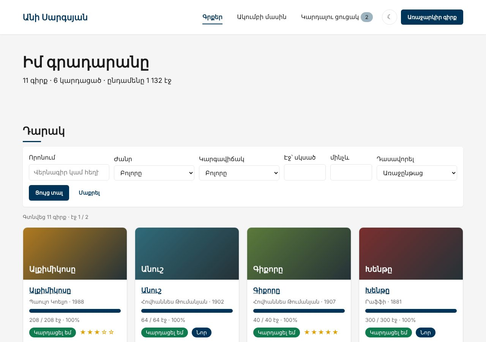
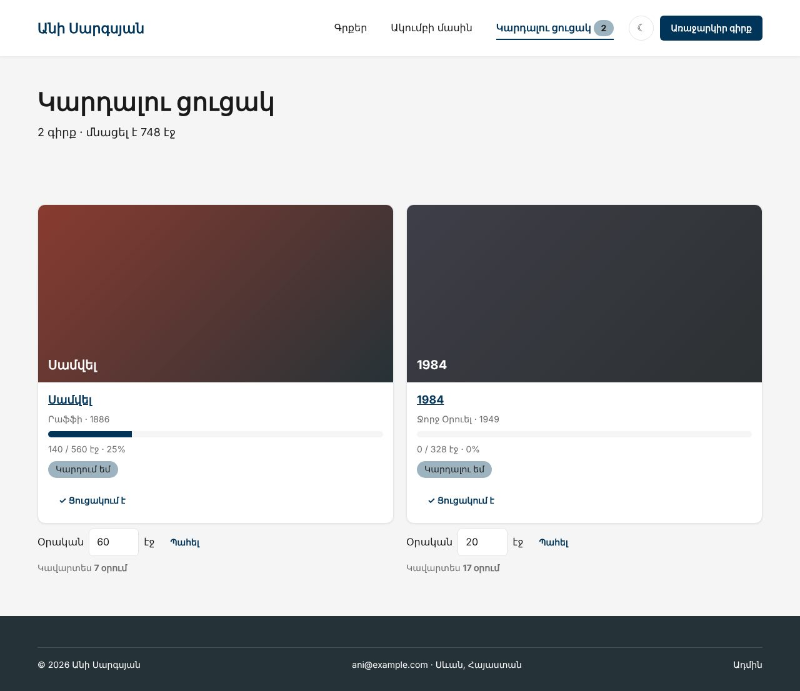

Տնային աշխատանք · PHP Դաս 12 · մինի-նախագիծ
Զանգվածը, որի մեջ կարելի է գրել ամեն ինչ ($book['prise']), դառնում է Book դաս՝ readonly դաշտերով և մեթոդներով։ Կարդալու ցուցակը՝ ReadingList դաս, իսկ ցուցակի ամեն տող՝ ListItem՝ օրական էջերի նպատակով։
Դաս 01–12․ class, __construct promotion-ով, public/private, readonly, static ֆաբրիկա (fromRow), const դասում, self::, &$storage, named arguments։ Ժառանգում և ինտերֆեյս՝ Դաս 13։


== $row['titel'] — զանգված
Արդյունք՝ NULL — Warning, և կոդը շարունակում է null-ով
== $book->titel — օբյեկտ
Warning: Undefined property: Book::$titel in /ani-club/lab-oop.php on line 29
Արդյունք՝ NULL
== $book->titel = ... — նոր դաշտ օբյեկտում
Deprecated: Creation of dynamic property Book::$titel is deprecated in /ani-club/lab-oop.php on line 34
Գրվեց, բայց PHP 8.2-ը զգուշացնում է․ PHP 9-ում կլինի Error
== $book->pages = 1 — readonly
Error: Cannot modify readonly property Book::$pages
== ReadingList առանց &-ի
Առանց &․ $session = [] ← ոչինչ չպահվեց
&-ով․ $session = {"5":20}Շարունակիր քո նախագիծը։ Եթե բաց ես թողել նախորդ դասը, սկսիր Դաս 11-ի օրինակից։
starter/css/php-12.css — «Նոր» պիտակ, աստղեր, նպատակի ֆորմա| Գործարկել |
|---|
php -S localhost:8000 |
classes/Book.php՝ 13 readonly դաշտ կոնստրուկտորումBook::fromRow($row)՝ բոլոր (int)-երը մեկ տեղումstatus(), statusLabel(), progress(), pagesLeft(), yearLabel()isNew()՝ վերջին 30 օրում, shortTitle(40), stars() (տնային 2)/** Ավելացվել է վերջին 30 օրում */
public function isNew(): bool
{
// strtotime()՝ «2026-10-14 10:00:00» → վայրկյաններ 1970-ից, ինչպես time()-ը
return strtotime($this->createdAt) > time() - 30 * 24 * 60 * 60;
}
/** Երկար վերնագիրը՝ 40 նիշից կտրած, քարտի համար */
public function shortTitle(int $max = 40): string
{
// mb_substr()՝ substr()-ի հայերեն-անվտանգ տարբերակը, ինչպես mb_strlen()-ը (Դաս 02)
return mb_strlen($this->title) > $max ? mb_substr($this->title, 0, $max - 1) . '…' : $this->title;
}Genre::fromRow(), getGenres()-ը վերադարձնում է Genre[] (տնային 3)new ReadingList($_SESSION['list'])՝ private array &$storage[id => օրական էջ]setPerDay()՝ 1–200, միայն ցուցակում եղած գրքի համար (տնային 7)/** Տնային 7 (Cart::setQty-ի նման)․ օրական 1–200 էջ, միայն ցուցակում եղած գրքի համար */
public function setPerDay(int $id, int $pages): bool
{
if (!$this->has($id) || $pages < 1 || $pages > 200) {
return false;
}
$this->storage[$id] = $pages;
return true;
}new ListItem($book, $perDay), daysLeft()՝ կլորացված վերև (տնային 9)lab-oop.php՝ $row['titel'] և $book->titel (տնային 4), readonly (տնային 5), &-ի բացակայությունը (տնային 6)$book->title, ոչ $book['title']$book->pages = 1-ը տալիս է ErrorreadingList()->count()list-functions.php-ը ջնջված է| Սխալ | Ինչպես ուղղել |
|---|---|
| Ցուցակը չի պահվում | Կոնստրուկտորում & չկա․ դասը փոխում է պատճենը |
Cannot modify readonly property | Ճիշտ է․ readonly-ն փոխվում է միայն կոնստրուկտորում |
Cannot use object of type Book as array | Մի շաբլոն դեռ գրում է $book['...'] |
daysLeft()-ը 2 է, պետք է 3 | (int) ($left / $perDay)-ը կլորացնում է ներքև․ ($left + $perDay - 1) / $perDay |
Սրանք Դաս 12-ի տնային աշխատանքի կետերն են։ «մինի-նախագծում» նշվածները արդեն կատարել ես վերևի քայլերում՝ Անիի ակումբում։ Մնացածը կատարիր ՏեխնոՄարկետում, ինչպես գրված է դասում։
Product-ին երեք նոր մեթոդ՝ discountLabel(), isNew() (30 օրից պակաս), shortName() (40 նիշից կտրած)։ մինի-նախագծումCategory դասը fromRow()-ով։ մինի-նախագծում$p['prise'] և $p->prise։ Ի՞նչ է տալիս ամեն մեկը։ մինի-նախագծումreadonly-ն և ցուցադրիր, ինչու է այն օգտակար՝ փոխելով գինը շաբլոնում։ մինի-նախագծումCart-ի կոնստրուկտորից հանես &-ը։ մինի-նախագծումCart::setQty() մեթոդ վալիդացիայով։ մինի-նախագծումcart-functions.php-ը և նոր Cart դասը։ Քանի՞ տող, քանի՞ գլոբալ ֆունկցիա։CartItem դաս, որը պահում է Product-ը և քանակը, և ունի sum() մեթոդ։ մինի-նախագծումProduct-ը։ Ի՞նչ մեթոդ առաջարկեց, որ չէիր մտածել։Երբ բաժին 03-ի բոլոր կետերը նշված են, բացիր օրինակը։ Օրինակում lab-… ֆայլերը փորձնական են․ դրանք հաջորդ դասի օրինակում այլևս չկան։ Գործարկելուց առաջ ստեղծիր բազան example/sql/-ի ֆայլերով և config.php-ը։ Գտիր մեկ բան, որ դու արել ես այլ կերպ, և մտածիր՝ որն է ավելի հասկանալի և ինչու։ Քո լուծումը կարող է տարբերվել և լինել ճիշտ։